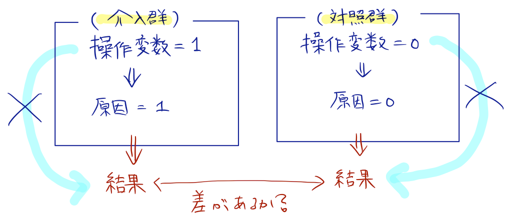

Subsections
操作変数：結果には直接影響を与えないが，原因に影響を与えることで間接的に結果に影響をあたえるような第3の変数（原因に影響を与えることでしか結果に影響を与えないような変数）
操作変数法：操作変数によって原因が左右されてできた群間で結果を比較することで，因果関係を検証する方法

マシュー・ゲンコウ＠スタンフォード他の研究
- 1948-52にテレビ放送免許の凍結が行われたことに注目
- 1948年次点でテレビ局が1つも開局されていない地域に住んでいた人たち（52年以降しかテレビを見られなかった）（対照群）
- 1948年以前からテレビを見ることができた家庭（介入群）
- 操作変数：1948-52にテレビを所有していたか（
テレビを見られる地域に住んでいたか）
（結果）
- 幼少期にテレビを見ていた子供たちの方が学力偏差値が0.02高かった
- 宿題に費やす時間や進学希望などにも悪影響見られず
- 英語が母語でなかったり，母親の学歴が低かったり，白人以外の人種の子供で，テレビ視聴が成績を上げる効果は大きい
- 経済的に豊かな家庭（活動の選択肢が多い）では，テレビの持つプラスの因果効果はほぼない（マイナスになることもある）
（疑問）操作変数は妥当か？
テレビを所有していたかどうかは，テレビが見られる地域に住んでいたかどうかだけでなく家庭の社会経済的地位とも関係する。
家庭のSESは成績に影響を与えるだろうから，これが操作変数にも結果にも影響を与える第4の変数として働いていた可能性がある。（実際，SESとテレビ視聴の効果には交互作用がある。）
ジャネット・カリー＠コロンビア他の研究
- 操作変数：17歳時点で住んでいた自宅から大学までの距離（母親の大学進学への意思決定には影響するが，子供の健康には直接影響しない）
（結果）
- 大卒以上の母親の子供は，早産や低出生体重で生まれる確率が低く，生まれたときの健康状態が良好
- 高学歴な母親は妊娠中の喫煙率が低く，妊婦健診に行く確率も高かった（大学に行くことで，子供の健康状態が良くなるような習慣を身につけたか？）
（疑問）操作変数は妥当か？
文教地区に住んでいた母親というのは家庭のSESが高いはず。
SESが高い家庭ほど子供の健康にはより関心を持っている可能性が高い。
子供の健康状態が良くなる習慣が身についたのは，大学に行くことそのものではなく，文教地区に生まれ育ち豊かな家庭環境に恵まれていたからではないのか？
少なくとも，母親の「習慣」が直接の原因なら，大学に行くことそのものは間接的な原因でしかない。
参考：女性活躍推進法（2016年）（企業や自治体が女性管理職比率の数値目標を盛り込んだ行動計画を策定し，公表することが義務付けられた）
ケネス・アハーン＠南カリフォルニア大学他の研究
- ノルウェーで，女性取締役比率が2008年までに40%に満たない企業を解散させるという法律が議会を通過（2003年施行）
- 操作変数：法律が施行される前の各企業の女性取締役比率
- 法律施行前に比率が高かった企業は女性取締役を増やさずにすんだ（女性取締役比率という原因に影響を与える）
- 現在の企業価値に直接影響はしない
（結果）女性取締役比率の上昇は企業価値を低下させた
- 経験が浅く，経営者の資質に欠ける女性を無理やり取締役にして急場をしのいだ
- この期間に取締役に就任した女性は年齢が若く，経験が浅く，他業種からの参入が多かった
- 女性取締役はもともと取締役だった人と同姓が多い（取締役の妻や娘を取締役に取り立てた）
（疑問）操作変数は妥当か？
法律施行前に女性取締役比率が高かった企業は，それだけイノベーティブであり，企業価値が高かった（もしくは高くなる潜在性を秘めていた）のではないか？
- デモグラフィー型（女性，外国人といった外見上判別可能）
- タスク型（実際の業務に必要な能力や経験）
過去のメタアナリシスでは，企業価値を高めるにはタスク型ダイバシティーが必要という結果が得られている。
（疑問）タスク型ダイバシティーがイメージできない。
業務に必要な能力や経験が多様な人を集めるということは，高い人だけでなく低い人も集めるということ？（能力の高低のダイバシティなのか，能力の種類のダイバシティなのか）
Taichi Okumura
2018-01-11